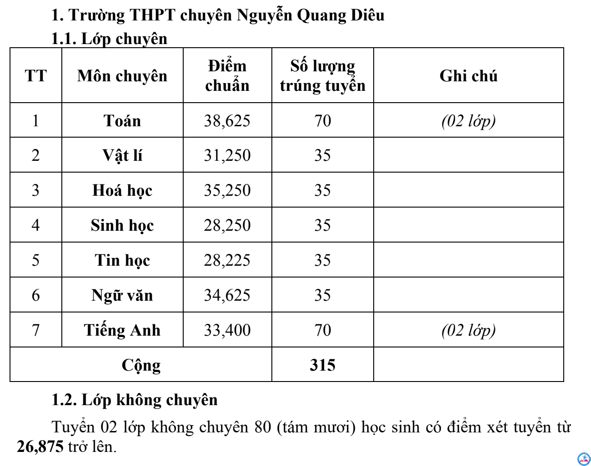
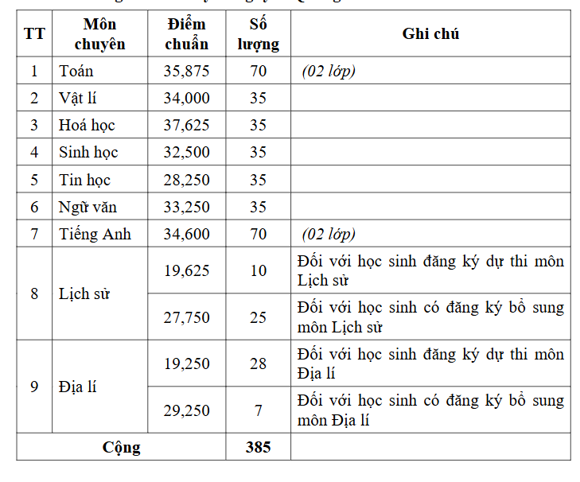
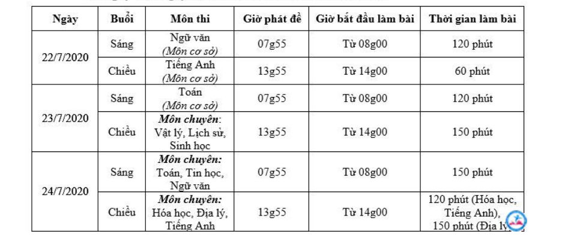

1. Giới thiệu & Quy chế tuyển sinh
Trường THPT chuyên Nguyễn Quang Diêu là trường chuyên của tỉnh Đồng Tháp,
đào tạo học sinh giỏi với nhiều lớp chuyên như Toán, Lý, Hóa, Sinh, Tin, Văn, Anh.
- Mỗi lớp khoảng 35 học sinh
- Thi 3 môn: Toán, Văn, Anh + môn chuyên
- Chất lượng đào tạo cao
- Nhiều thành tích học sinh giỏi cấp tỉnh và quốc gia
2. Điểm chuẩn tuyển sinh
📌 Năm 2023

📌 Năm 2024

3. Lưu ý khi ôn thi
- Nắm chắc kiến thức cơ bản
- Luyện đề thường xuyên
- Chọn đúng môn chuyên phù hợp
- Quản lý thời gian làm bài
4. Tips ôn thi
- Học theo sơ đồ tư duy
- Làm đề các năm trước
- Ôn theo chuyên đề
- Ngủ đủ trước ngày thi
5. Công thức tính điểm
Điểm xét tuyển = (Điểm Toán + Điểm Văn + Điểm Anh) + (Điểm môn Chuyên × 2)
6. Thời gian thi

🍀 Chúc các bạn thi tốt!